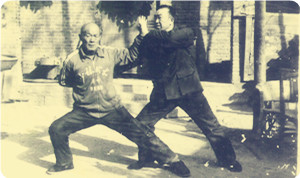

At the age of six, he was born in the lower house of the Shaolin Temple in Gong County, and he was a teacher. He returned to Shaolin Temple at the age of sixteen, from Master Wu of the Emperor Xuan, and from the famous Wu Zuolin, the famous son of the martial arts, to the martial arts of Wu Sanlin. He has mastered the Luohan boxing, and has more than 100 kinds of boxing and mechanical routines. The martial arts became the most well-known monk in the modern Shaolin Temple. When Degan was in the 20th year of his death in Xi'an, he used to punch the other side and hit a smash in Xi'an. In 1946, Degen served as the head of the Shaolin Temple monk and taught Shaolin martial arts. Professor of more than 30 disciples, Yang Jucai, Minhangshu, Wang Tianren (Fa Ming Su Xiang) are the monks who learned Wu from him at that time. After the liberation, Degen taught Shaolin martial arts in the Henan Song and Dance Troupe and Dengfeng County primary and secondary schools. , organize a martial arts team.
Shaolin Kung Fu (Chinese: 少林功夫; pinyin: Shàolín gōng fu), also called Shaolin Wushu (少林武術; Shàolín wǔshù) or Shaolin quan (少林拳; Shàolín quán), is one of the oldest, largest, and most famous styles of wushu or kungfu. It combines Ch'an philosophy and martial arts and originated and was developed in the Shaolin temple in Henan province, China during its 1500-year history. Popular sayings in Chinese folklore related to this practice include "All martial arts under heaven originated from Shaolin" and "Shaolin kung fu is the best under heaven," indicating the influence of Shaolin kung fu among martial arts. The name Shaolin is also used as a brand for the so-called external styles of kung fu. Many styles in southern and northern China use the name Shaolin.
Shaolin temple has two main legacies: Chan (禅), which refers to Chan Buddhism, the religion of Shaolin, and Quan (拳), which refers to the martial arts of Shaolin. In Shaolin, these are not separate disciplines and monks have always pursued the philosophy of the unification of Chan and Quan (禅拳合一; chan quan he yi). In a deeper point of view, Quan is considered part of Chan. As late Shaolin monk Suxi said in the last moments of his life, "Shaolin is Chan, not Quan."


Return Home